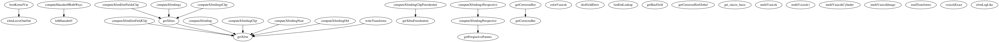

Master index
Index for Development/CONGEAL_SUPPORT
Dependency Graph for Development/CONGEAL_SUPPORT

{GRAPH_MAP}
Generated on Tue 23-Feb-2016 12:08:21 by
m2html
© 2005
 Master index
Master index Master index
Master index